[Silent Hill 4] The Mysterious "Game World" Article and a Community That Preferred Gossip
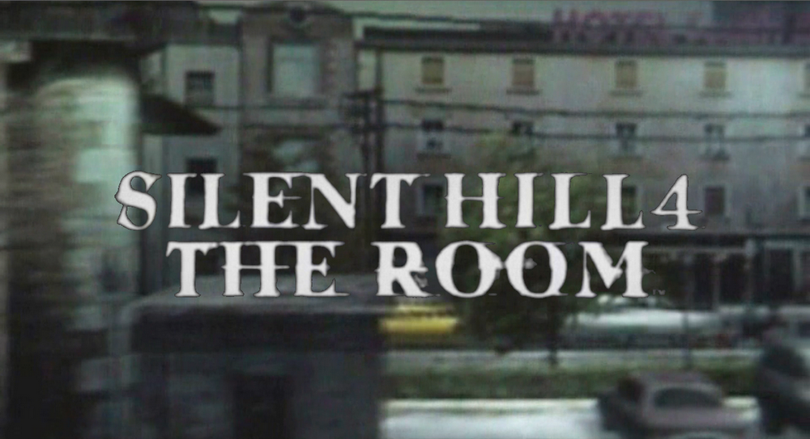
How Rumors Spread
This article mirrors the version on Medium.
![[Silent Hill 4] The Mysterious](../img/m03.png)
This copy is provided as a backup and for easier access. If you cite or quote this, please refer to the Medium version.

I mentioned this briefly in a previous comment, so I might as well write about it here as well.

This concerns a story about Silent Hill 4’s development history that has become established overseas as something said in interviews, despite the fact that it was never stated by the Japanese official sources.
There is an interview whose text has been preserved only on a well-known Silent Hill fan site.
Silent Hill Memories (Game World) April 23, 2005 "Interview with Akihiro Imamura and Akira Yamaoka"
https://www.silenthillmemories.net/creators/interviews/2005.04.23_imamura_yamaoka_gameworld_en.htm
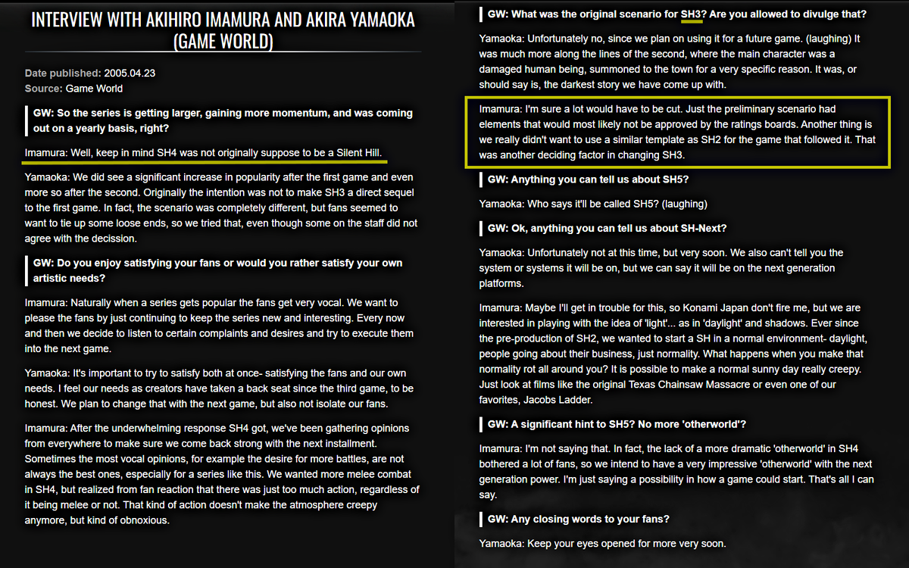
According to it, Silent Hill 4’s sub-producer, Imamura-san, said that “Well, keep in mind SH4 was not originally suppose to be a Silent Hill.” Some people have even used this as a source and told me, “See? Even another member said it too!”
Yet there’s no info about this publication, even when searching for it. It’s unclear whether it was an online article or a print publication. It’s not even certain which country it came from or how large the publication was. If anyone knows, please let me know.
The beginning of the article is also abrupt, with the conversation not really lining up. It also contains a section where Imamura-san talks about Silent Hill 3. In the past, someone asked Ito-san, who designed many of the creatures in the series, about that section on X (Twitter).
His reply was:
If they really said so, it’s different from the fact. In the first place, Imamura really had nothing to do with SH3.
https://x.com/snaKemuho/status/1098575073055772672
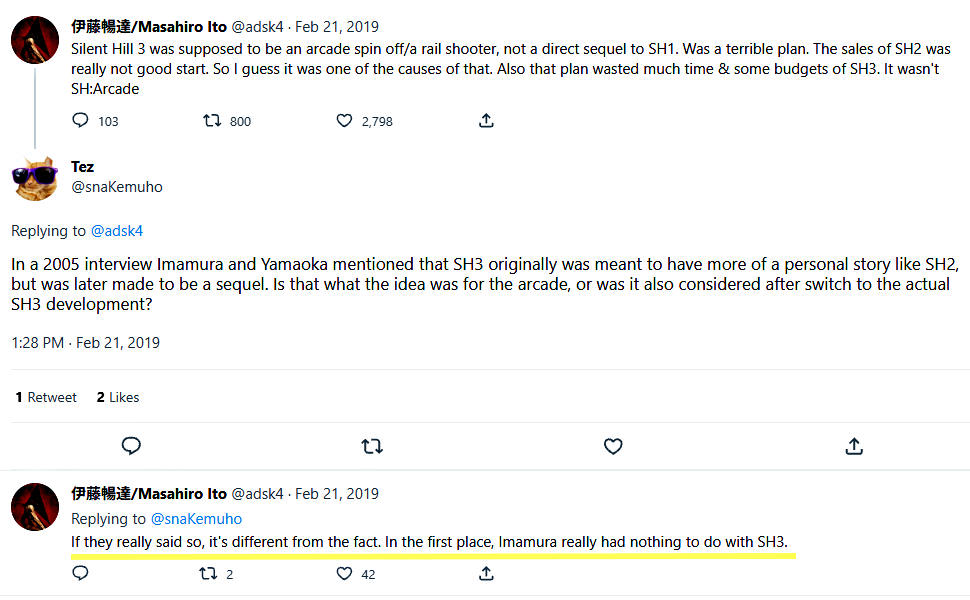
It’s an article in which someone who wasn't involved appears to be talking about the concept. In short, it’s fiction. Judging from that, the part about Silent Hill 4 is just as unreliable. There’re many other questionable points as well, such as references to terms like “Konami Japan.”.
(Ito-san is someone who gives clear answers like this. At the same time, he is also sincere enough not to comment on subjects outside his area of expertise. Since he wasn’t involved with Silent Hill 4, he doesn’t speak about matters outside his field.)
Was the Original Source Game Developer Magazine?
Now, regarding “Game World,” whose existence I was unable to verify, I suspect it may have been based on “Game Developer Magazine,” which also featured an “interview with Imamura-san and Yamaoka-san” around the same time “in 2005.”
Game Developer “Classic Postmortem: Konami’s Silent Hill 4: The Room (2004)”
https://www.gamedeveloper.com/audio/classic-postmortem-i-silent-hill-4-the-room-i-
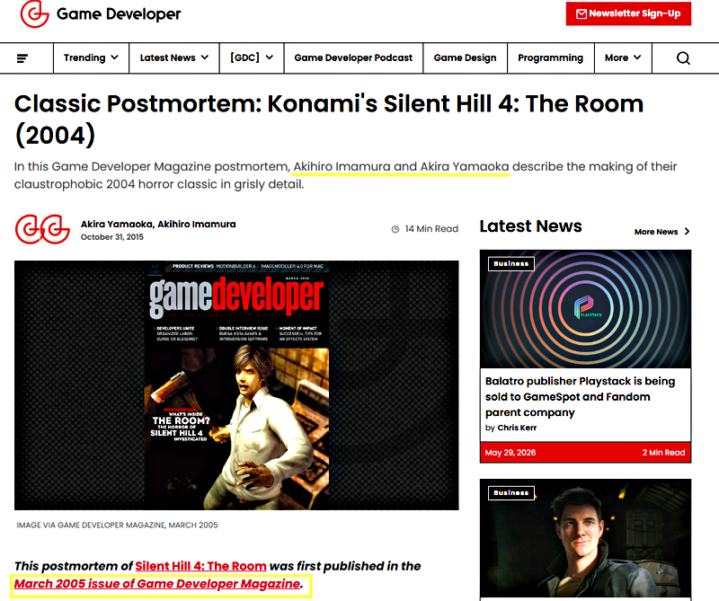
This one appears to have originally been a print publication that was later reuploaded online, and the article can still be read. There also appears to be a photo from the interview.
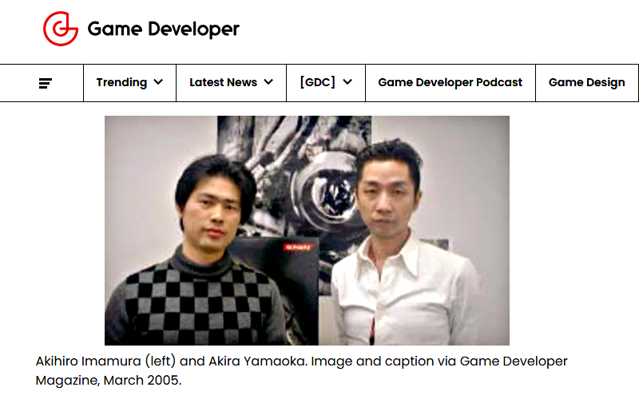
According to that article:
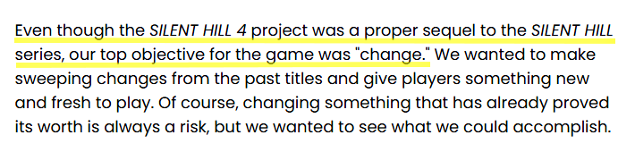
Even though the SILENT HILL 4 project was a proper sequel to the SILENT HILL series, our top objective for the game was “change.”
It describes Silent Hill 4 as a proper sequel. It also talks about change. This matches what Yamaoka-san said in interview published in Japan before the game’s release.
PS WORLD June 11, 2004 “SILENT HILL4 -THE ROOM-” Special Interview: Producer Akira Yamaoka talks about “A New Stage”
https://web.archive.org/web/20041212072004/http://www.jp.playstation.com/psworld/game/interview/sh4.html
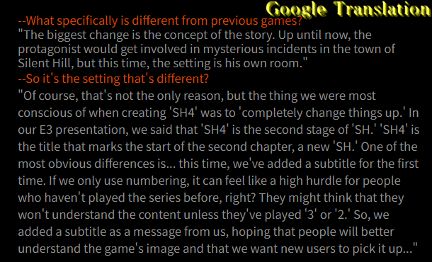
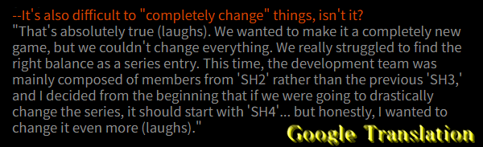
Incidentally, as the title makes clear, this article is about Silent Hill 4. There’s no section in which Imamura-san talks about Silent Hill 3. So the article that fans asked Ito-san about, and that he rejected, wasn't this one. It was “Game World.”
The Fan Community That Chose Sensational Gossip
When I pointed out the suspicious aspects of the Eurogamer and Boomtown articles, I also discussed a third interview from the same period called Kikizo.
Kikizo: Adam Doree “Konami: The Silent Hill 4 Interview” September 6, 2004
https://web.archive.org/web/20040907143732/http://games.kikizo.com/features/konami_interview_sep04.asp
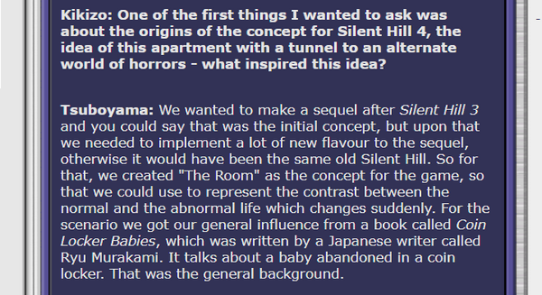
We wanted to make a sequel after Silent Hill 3 and you could say that was the initial concept, but upon that we needed to implement a lot of new flavour to the sequel, otherwise it would have been the same old Silent Hill.
That interview included photos and contained none of the statements made by the other two outlets, such as “Silent Hill 4 was not originally a Silent Hill game” or “Silent Hill 4 was originally a different title.” Yet for that very reason, because it was a more ordinary interview, it hasn’t been referenced nearly as much as the other two.
![[Silent Hill 4] The Dubious Roots of the Room 302 Theory](../img/m01.png)
The same thing seems to have happened here. Around the same period, both “Game World” and “Game Developer Magazine” appear to have interviewed the devs. Yet the first one I ever heard about was the former, whose source cannot even be properly verified.
There were also several English-language sources that said the same things as the official Japanese info. In fact, aside from Eurogamer, Boomtown, and outlets that appear to have relied on them, the reports generally matched. Yet those sources never became established in the English-speaking community.
That’s because the fan community itself preferred to spread the more sensational articles, the ones claiming that the devs made negative remarks about their own game before release, rather than the articles describing it as a proper sequel. This was despite the suspicious aspects of those articles.
Did the Community Become an Echo Chamber?
There’s an old post on a fan forum claiming that the matter had been confirmed with the Japanese official source. A fan who used to believe the story showed me the archive.
Silent Hill Heaven “SH4 , not originally a SH game?”
https://silenthillforum.com/viewtopic.php?t=1715
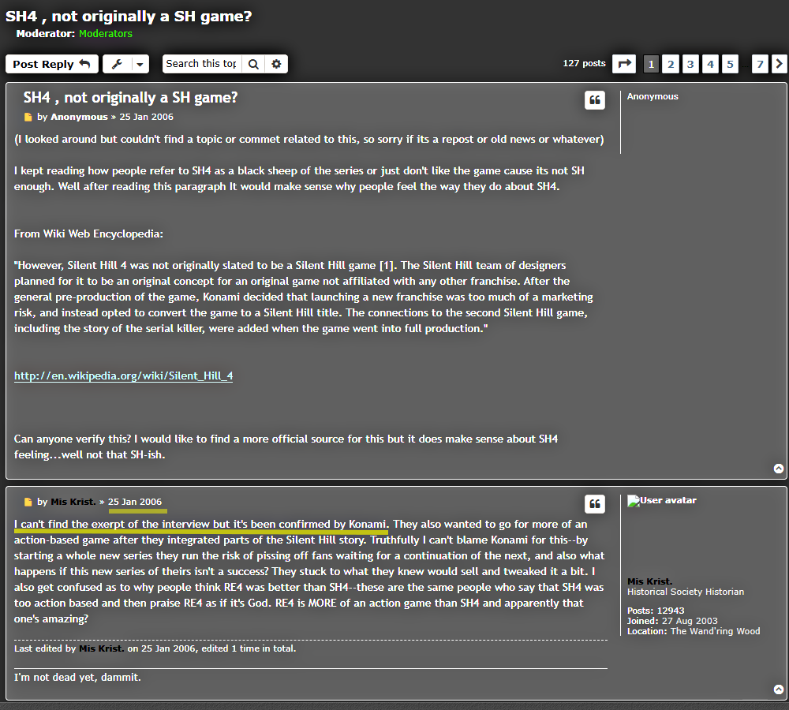
I can’t find the exerpt of the interview but it’s been confirmed by Konami. [sic]
This was the most famous forum in the English-speaking community. Before there was a subreddit, many English-speaking fans seem to have gathered there to discuss the series. Its influence is impossible to measure.
Yet at the time that post was made, the Japanese official website already contained the scenario writer-director’s explanation of the game’s development history.
Konami SILENT HILL 4 THE ROOM, Developer’s Voice”Vol. 2: “The Terror of the Room” Director and Scenario: Suguru Murakoshi
https://web.archive.org/web/20041025135039/http://www.konamityo.com/sh4/02roomq.html
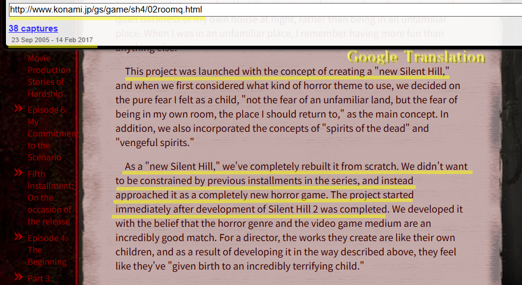
[Google] This project was launched with the concept of creating a “new Silent Hill,” and when we first considered what kind of horror theme to use, we decided on the pure fear I felt as a child, “not the fear of an unfamiliar land, but the fear of being in my own room, the place I should return to,” as the main concept. In addition, we also incorporated the concepts of “spirits of the dead” and “vengeful spirits.”
As a “new Silent Hill,” we’ve completely rebuilt it from scratch. We didn’t want to be constrained by previous installments in the series, and instead approached it as a completely new horror game. The project started immediately after development of Silent Hill 2 was completed.
As the Web Archives show, the official website remained available until 2017.
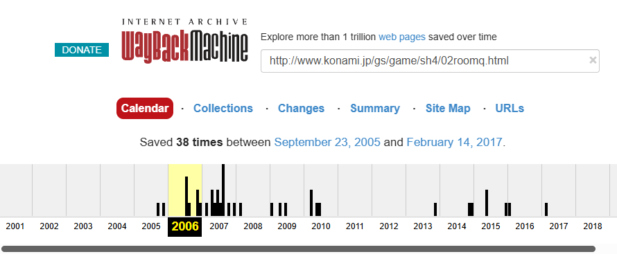
The overseas Silent Hill community is very dedicated. Fans have translated everything from the official Japanese website to official guidebooks and novels into English and preserved them. (There have even been cases where entirely fabricated “official” settings circulated only in English despite never existing in Japan, as well as mistranslations that completely reversed the original meaning.)
And again, there had always been English-language articles, such as the “Game Developer Magazine” article mentioned above, that said the same things as the official Japanese sources.
In fact, looking at the forum at the time, one user pointed out connections to previous titles and argued that it was part of the Silent Hill series. But that idea was pushed back by a comment like, “it doesn’t have elements we loved from the previous games.” Others even posted the Kikizo URL and quoted it to argue, “that theory is wrong.” But those posts were largely ignored.
Most people didn’t look for original sources themselves. Instead, they believed bold, sensational claims made by others, accepted info that reinforced those claims, and came up with their own explanations to make everything feel consistent. “Since XXX is different from before, it must not have originally been part of the series,” they would say.
By repeating these ideas to each other, an echo chamber formed within the community. Negative theories gradually became established as if they were credible. That forum effectively shows the process of how people come to believe rumors.
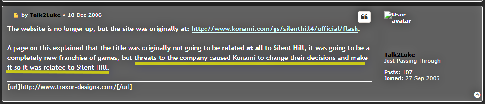
A page on this explained that the title was originally not going to be related at all to Silent Hill, it was going to be a completely new franchise of games, but threats to the company caused Konami to change their decisions and make it so it was related to Silent Hill.
Some people even justified their opinions with completely absurd claims. As mentioned above, there was already an official website at the time explaining the correct background, and I’ve written about the pre-release websites below.
In a previous article, I talked about how an article that might seem deliberately misleading to Asian readers isn’t necessarily seen that way by Western audiences, they may not even suspect any journalistic bias.
When I first read sites like Eurogamer, Boomtown, and Game World, I questioned the articles themselves, thinking, “Why would devs promote their own work negatively?”
But judging from that forum, many overseas fans didn’t share that perspective. There may also have been the assumption I mentioned before, “They’re Asian devs, so it wouldn’t be strange for them to say something eccentric.”
People Who Turn a Blind Eye
Unfortunately, the current community is no different. I have reached out to various people. But whether they’re data miners digging up unreleased assets, wiki admins, the creative fan communities, or social media communities, they will happily take character data and practical info. A very small number of people showed any interest in correcting the info that demeans the work they claim to love or the devs they claim to respect.
They might not be actively spreading the rumors themselves, so they may see themselves as different from those in the past. But wasn’t it the values of the Western world that hold that silence is complicity?
In fact, the initial interview where one of the devs disputed the article’s version, along with the old forum posts and numerous other pieces of misinformation, remains accessible to this day. Without any proper corrective references in place, new readers continue to believe these sources, and new accounts continue to spread them.
Time Can’t Be Turned Back, But…

Silent Hill 3 and Silent Hill 4 had pre-release websites in addition to their official website. They were elaborate sites that used Flash, which was popular at the time, with pages that could only be unlocked by solving puzzles. Japanese fans explored them with excitement while waiting for the games to be released.
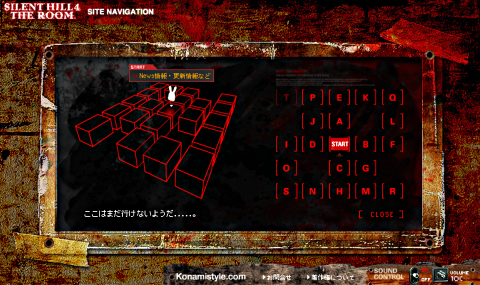
Silent Hill 4 in particular included background info and lore that never appeared in the game itself and could only be found on that website. There was also a newsletter. Unfortunately, they were only available in Japanese, though they were later translated into English by fans.
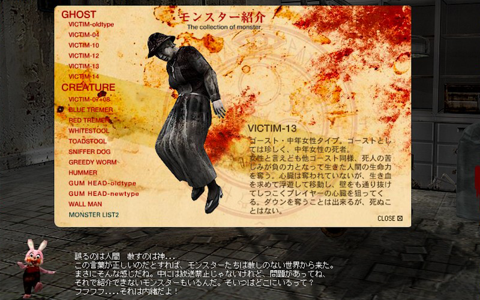
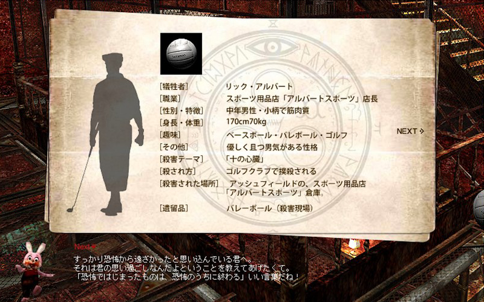
Unlike Japanese fans, who were able to look forward to the release while simply enjoying what was being shown to them, English-speaking fans a few months later were given negative claims such as “this game was folded into the series for commercial reasons” and were led to believe that those claims were true. In that sense, I feel sorry for overseas fans.
At the same time, because I experienced that period firsthand, I remember how much effort the devs put into the game before release. I also remember how much they cared about it. On the official website that the English-speaking community ignored, the writer-director, Murakoshi-san, called Silent Hill 4 as his own child.
That’s why, if that incorrect story has continued to spread overseas for all these years, those who remember that time have to say that the info is wrong. It has to be recorded somewhere. That’s why I’m writing this.
I’ll say it as many times as it takes. Back then, there was never a theory in Japan that “Silent Hill 4 was originally being developed as a different game and was incorporated into the Silent Hill series for commercial reasons.”
Japanese devs never said such a thing, either in official materials or in Japanese interviews. They consistently stated that it was created from the ground up as a new entry in the series.
English-language outlets such as Eurogamer and Boomtown presented a different version of the story. As I have shown, there were many suspicious points in those articles. Even so, other outlets cited them without checking the Japanese sources, and fans spread them further. The development history has simply been passed along in a distorted form through the accumulation of innocent misinformation.
Some people believe both the official Japanese and the overseas rumor, and assume that the game’s development history was complicated.
It wasn’t. There’s only one version. The truth is simple. And it’s not dramatic.
Aug 3, 2026
As mentioned in the comment below on Medium, a note has been added to the source site listed for the “Game World” article.